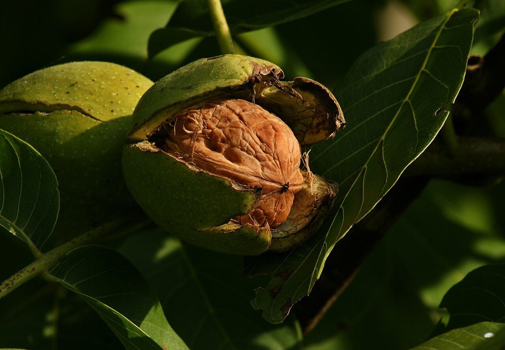

口コミ
こんなふうに思うかも
お店を知った人が思いそうなことを、制作側が創作したものです。
以下は制作側が考えた創作のイメージ例で、実在のお客様の投稿ではありません。実際の口コミ・評価とは関係ありません。
いつか足を運んでみたいカフェです。まずはInstagramをのぞいて、どんなお店なのか少しずつ知ってみたいと思います。
営業時間などが分かったら、行ってみたいです。それまでは、Instagramの更新を楽しみにしています。
電話やInstagramで、気になることを聞いてみたいです。営業時間などが分かったら、行ってみたいと思います。
